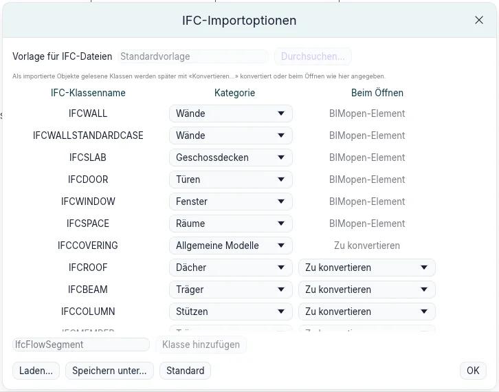
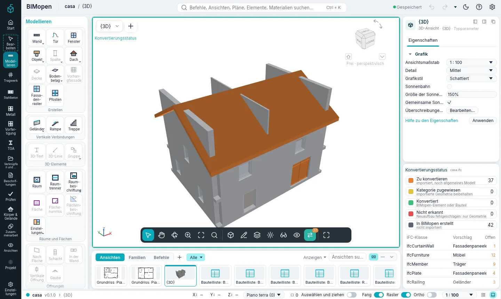
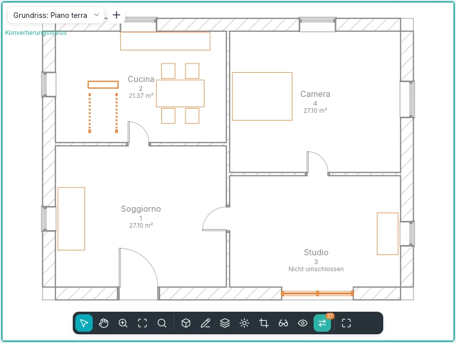
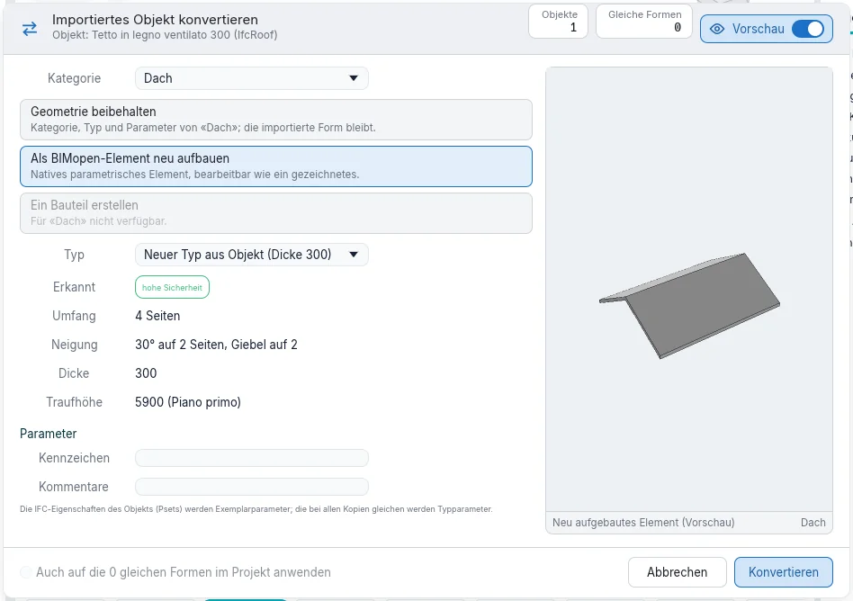
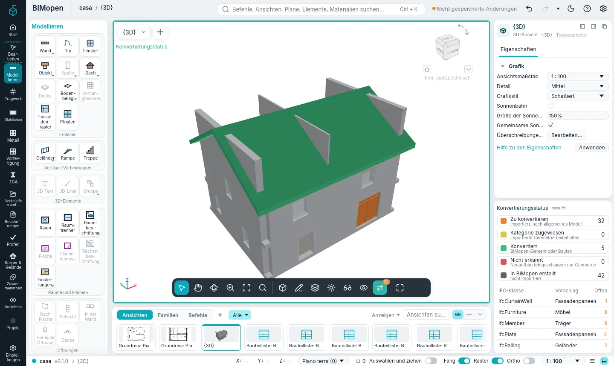
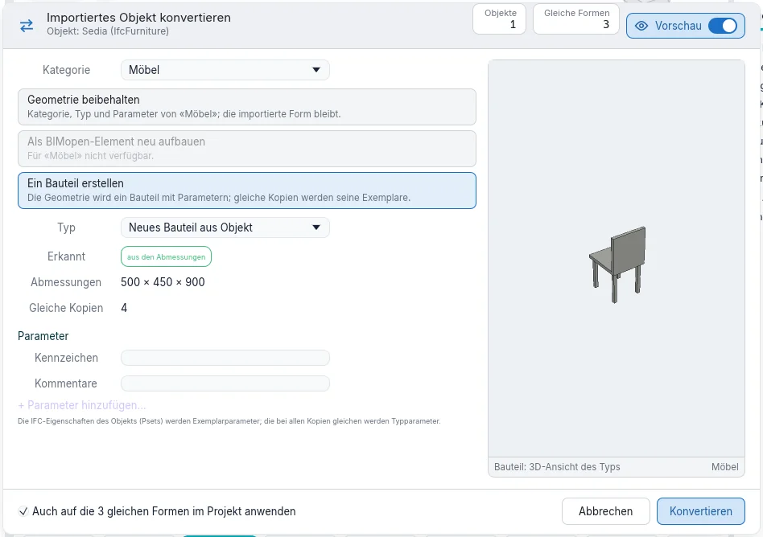
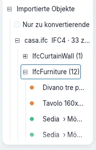
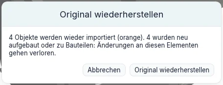

Importieren und Konvertieren
Ein Modell aus einer anderen Software kommt als IFC-Datei. BIMopen liest ihre Wände, Decken, Türen, Fenster und Räume als eigene Elemente. Alles andere mit einer Form (Dächer, Träger, Stützen, Treppen, Geländer, Fassaden, Möbel, Sanitärobjekte) bleibt ein importiertes Objekt: seine Geometrie, wie sie gelesen wurde, als allgemeines Modell. Konvertieren macht dann aus jedem importierten Objekt ein BIMopen-Element beliebiger Kategorie, wann und so weit es nötig ist.
Eine IFC-Datei öffnen
- Öffnen Sie das Anwendungsmenü (das BIMopen-Zeichen oben in der Seitenleiste) und wählen Sie Öffnen ➤ IFC….
- Wählen Sie eine IFC2x3- oder IFC4-Datei.
BIMopen erstellt ein neues Projekt: Geschosse werden Ebenen, Wände werden aus ihrer Achse neu aufgebaut, Platten werden Decken, Türen und Fenster kommen in die Wände, die ihre Öffnungen schneiden, IFC-Räume werden Räume. Jedes andere Objekt mit einer Form wird ein importiertes Objekt. Jedes behält:
- die Datei, aus der es stammt, und ihr Format (
casa.ifc · IFC4); - seine IFC-Klasse (
IfcRoof,IfcFurniture…) und seine Kennung; - das Objekt, dessen Teil es ist: die Läufe einer Treppe, die Paneele einer Fassade;
- seine Eigenschafts- und Mengensätze, in Eigenschaften unter IFC-Eigenschaften.
Die Meldungen zählen, was gelesen, was angenähert und was ausgelassen wurde.
IFC-Importoptionen
Koordinieren ▸ IFC-Optionen… öffnet IFC-Importoptionen: was jede IFC-Klasse beim Öffnen einer Datei wird.

- Wände, Platten, Türen, Fenster und Räume werden als BIMopen-Element gelesen; jede dieser Klassen lässt sich stattdessen als importiertes Objekt lesen (Allgemeine Modelle) oder auslassen (Nicht importiert).
- Die übrigen Klassen werden als importierte Objekte gelesen. Kategorie ist die Kategorie, die für jede Klasse beim Konvertieren vorgeschlagen wird: jede Kategorie von BIMopen.
- Beim Öffnen sagt, was mit ihnen beim Öffnen der Datei geschieht: Zu konvertieren lässt sie für später; Geometrie beibehalten, Als BIMopen-Element neu aufbauen oder Ein Bauteil erstellen konvertiert sie sofort (siehe unten).
- Klasse hinzufügen fügt eine Klasse hinzu, die die Liste nicht hat.
- Laden… liest eine Klassenzuordnungsdatei, Speichern unter… schreibt eine: eine Textdatei, eine Klasse je Zeile. Standard stellt die Standardzuordnung wieder her.
Die Optionen bleiben von einer Sitzung zur nächsten erhalten.
Konvertierungsstatus
Solange das Projekt noch zu konvertierende importierte Objekte enthält, zeigt die Ansichtsleiste Konvertierungsstatus mit ihrer Anzahl. Der Tooltip sagt, wie viele es sind und in wie vielen IFC-Klassen.
Ein Klick darauf: Die Ansicht zeigt jedes Objekt in der Farbe seines Status, in einem türkisfarbenen Rahmen.
| Farbe | Status | Bedeutung |
|---|---|---|
| Orange | Zu konvertieren | importiert, noch allgemeines Modell |
| Gelb | Kategorie zugewiesen | importierte Geometrie beibehalten, mit einer Kategorie |
| Grün | Konvertiert | BIMopen-Element oder Bauteilexemplar |
| Rot | Nicht erkannt | der Neuaufbau hat die Form nicht erkannt: nur Geometrie |
| Grau | In BIMopen erstellt | nicht importiert |

Er funktioniert in Grundrissen, Schnitten, Ansichten und 3D-Ansichten und ändert nur das Fenster: das Modell und die anderen Ansichten bleiben, wie sie sind. Solange er eingeschaltet ist, lassen sich nur importierte Objekte auswählen.

Das Paneel Konvertierungsstatus unter Eigenschaften enthält:
- die Legende mit der Anzahl jedes Status: ein Klick auf einen Status blendet ihn in der Ansicht aus oder wieder ein;
- die IFC-Klassen mit noch zu konvertierenden Objekten, die für jede vorgeschlagene Kategorie und wie viele übrig sind. Ein Klick auf eine Klasse wählt ihre zu konvertierenden Objekte aus und öffnet Konvertieren….
Wenn nichts mehr zu konvertieren ist, sagt es das Paneel. Schalten Sie Konvertierungsstatus aus, und seine Schaltfläche verschwindet aus der Ansichtsleiste.
Im Stil Klassisch ist das Paneel eine Registerkarte neben Eigenschaften; im Touch-Modus ist es ein Blatt, das aus den Einstellungen der Ansicht geöffnet wird.
Ein importiertes Objekt konvertieren
Wählen Sie ein oder mehrere importierte Objekte aus: Die kontextbezogene Karte Bearbeiten | Importierte Objekte öffnet sich. Konvertieren… öffnet Importiertes Objekt konvertieren.

- Kategorie: was das Objekt wird. Der Vorschlag der Klasse steht zuerst.
- Eine der drei Arten (unten). Eine Art, die für die Kategorie nicht gilt, ist grau.
- Typ: einer der Typen der Kategorie oder ein neuer, aus dem Objekt erstellter Typ.
- Erkannt: was BIMopen in der Form liest und wie sicher es ist.
- Parameter: Kennzeichen und Kommentare sowie die IFC-Eigenschaften des Objekts.
- Konvertieren.
Die Vorschau zeigt, was das Objekt wird. Der Schalter Vorschau in der Kopfzeile blendet sie aus; der Dialog behält seine Größe.
Die drei Arten
| Art | Kategorien | Was geschieht |
|---|---|---|
| Geometrie beibehalten | alle | Das Objekt erhält die Kategorie, einen Typ und Parameter. Es zählt in Bauteillisten, Filtern, Sichtbarkeit und IFC-Export als Element dieser Kategorie; seine Form bleibt die importierte. Es lässt sich verschieben, drehen und spiegeln. |
| Als BIMopen-Element neu aufbauen | Wände, Decken, Dächer, Türen, Fenster | BIMopen liest die Form und erstellt das native Element, bearbeitbar wie ein gezeichnetes: Achse, Dicke und Höhe einer Wand; Umriss, Dicke und Oberkante einer Decke; Umriss, Neigungen, Dicke und Traufhöhe eines Dachs; eine Tür oder ein Fenster in der Wand, in der es steht, mit Breite, Höhe und Brüstung. |
| Ein Bauteil erstellen | Möbel, Sanitärobjekte, allgemeine Modelle, Türen, Fenster, Stützen, Träger | Die Geometrie wird ein Bauteiltyp mit Breite, Tiefe und Höhe aus ihren Abmessungen; wer sie ändert, streckt die Form. Das Objekt wird sein Exemplar. |
Eine Form, die sich nicht als die gewählte Kategorie neu aufbauen lässt, wird rot (Nicht erkannt) und bleibt, wie sie war: Konvertieren Sie sie erneut und behalten Sie die Geometrie bei. Der Neuaufbau von Stützen, Trägern, Treppen und Geländern kommt in einer späteren Phase.
Kategorie in Eigenschaften tut dasselbe wie Geometrie beibehalten: Die Wahl einer Kategorie dort konvertiert das ausgewählte Objekt sofort.

Bauteile aus importierten Objekten
Bauteil erstellen auf der kontextbezogenen Karte öffnet den Dialog mit gewählter Art Ein Bauteil erstellen.

Die IFC-Eigenschaften, die bei allen Kopien gleich sind, werden Typparameter; die abweichenden bleiben bei jedem Exemplar. Das Bauteil erscheint im Projektindex unter Importierte Objekte, und ihre Typparameter ändern alle Exemplare zugleich.
Gleiche Formen
Kopien derselben Form, im Grundriss verschoben und gedreht, werden als gleich erkannt. Gleiche Formen auswählen wählt sie aus; im Dialog konvertiert Auch auf die N gleichen Formen im Projekt anwenden sie zusammen (beim Erstellen eines Bauteils standardmäßig eingeschaltet). Als Exemplare eines einzigen Bauteils brauchen sie weniger Speicher und werden in großen Modellen schneller gezeichnet.
Importierte Objekte auswählen
- Klasse auswählen wählt die importierten Objekte derselben IFC-Klasse aus.
- Eine Klasse im Paneel Konvertierungsstatus oder Alle konvertieren (N)… auf einer Klasse im Projektindex wählt ihre zu konvertierenden Objekte aus und öffnet den Dialog.
- Ein Objekt, das Teil eines anderen ist (ein Lauf einer Treppe), geht mit ihm: Wer das Ganze konvertiert, nimmt seine Teile mit.
Importierte Objekte im Projektindex
Importierte Objekte im Projektindex listet jede gelesene Datei mit ihrem Format und der Zahl der noch zu konvertierenden Objekte; darunter die IFC-Klassen, unter jeder Klasse ihre Objekte, mit der Farbe ihres Status und, einmal konvertiert, der Kategorie, die sie geworden sind. Aus Teilen bestehende Objekte listen ihre Teile darunter.

- Nur zu konvertierende blendet aus, was bereits konvertiert ist.
- Ein Klick auf ein Objekt wählt es aus; ein Doppelklick zeigt es in einer Ansicht.
- Die rechte Maustaste auf einer Klasse: Alle konvertieren (N)…, Alle zu konvertierenden auswählen (N), Originale wiederherstellen (N).
- Die rechte Maustaste auf einer Datei: dasselbe und Herkunftsverweise entfernen….
- Die rechte Maustaste auf einem Objekt: Konvertieren…, Gleiche Formen auswählen, In Ansicht zeigen, In Ansicht ausblenden, Original wiederherstellen.
Die Originale wiederherstellen
Was eine Konvertierung ersetzt, bleibt im Projekt, in der .bimopen-Datei: das Originalobjekt
mit den Teilen, die es mitgenommen hat. Original wiederherstellen (auf der kontextbezogenen
Karte, im Projektindex oder im Menü der rechten Maustaste) stellt es wieder her, wie es importiert
wurde, wieder orange.

Es fragt zuerst nach und sagt, was verloren geht: Änderungen an neu aufgebauten Elementen oder Bauteilen sowie Türen und Fenster in konvertierten Wänden. Ein durch die Konvertierung erstelltes Bauteil geht mit seinem letzten Exemplar. Rückgängig nimmt eine Konvertierung oder eine Wiederherstellung zurück wie jede andere Änderung.
Die Geometrie der Originale wird für jedes gleiche Netz nur einmal gespeichert, daher kostet ihre Aufbewahrung wenig. Wenn die Konvertierungen endgültig sind, löscht Herkunftsverweise entfernen… auf der Datei im Projektindex die Originale: danach ist Original wiederherstellen nicht mehr möglich.
Demnächst
- Aus Datei aktualisieren: die Quelldatei erneut lesen und ihre Objekte aktualisieren.
- Werkzeuge nach Fläche, um Wände, Decken und Dächer auf freie und gekrümmte Formen zu setzen.
- Der Neuaufbau von Stützen, Trägern, Treppen und Geländern.
- Das Konvertieren von Objekten aus OBJ- und glTF-Dateien mit demselben Dialog.